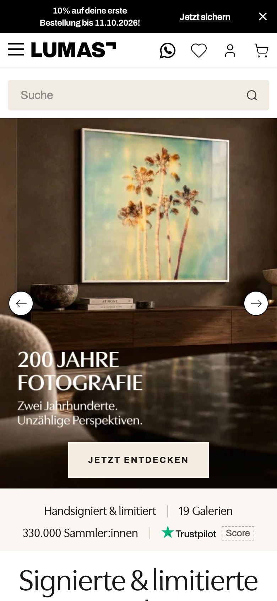
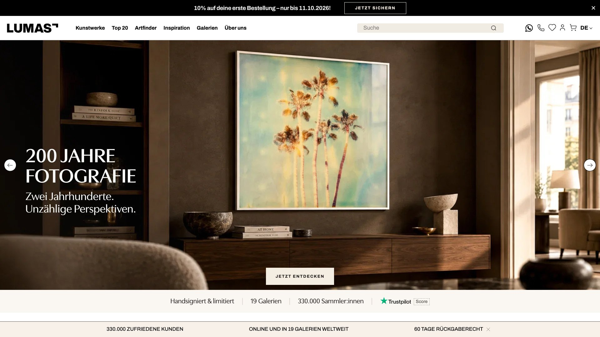
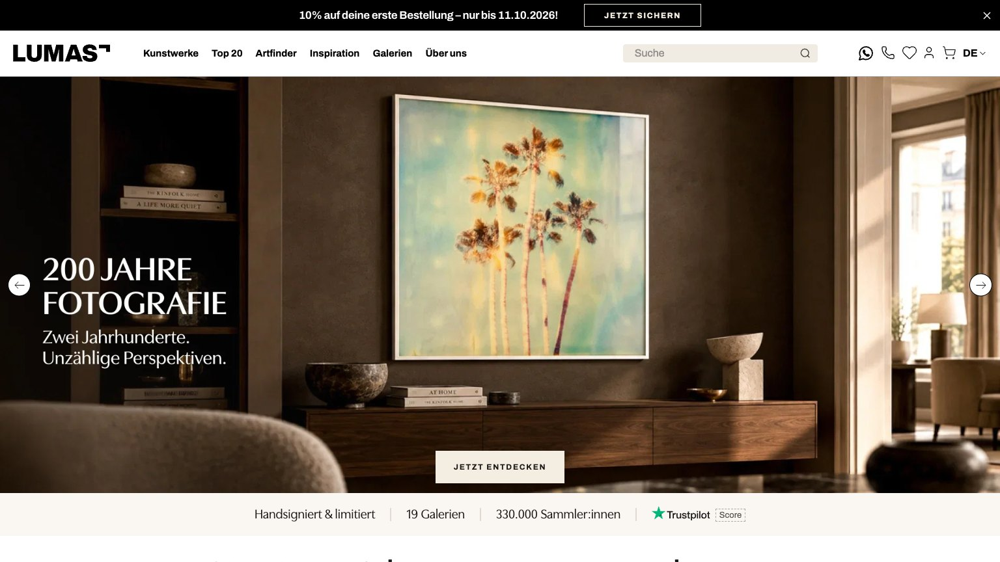
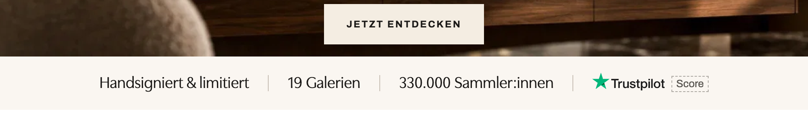
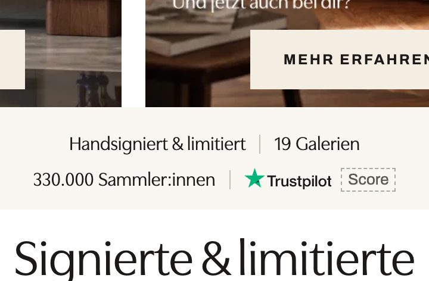
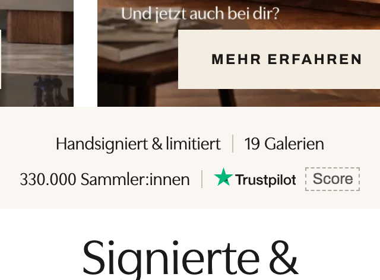
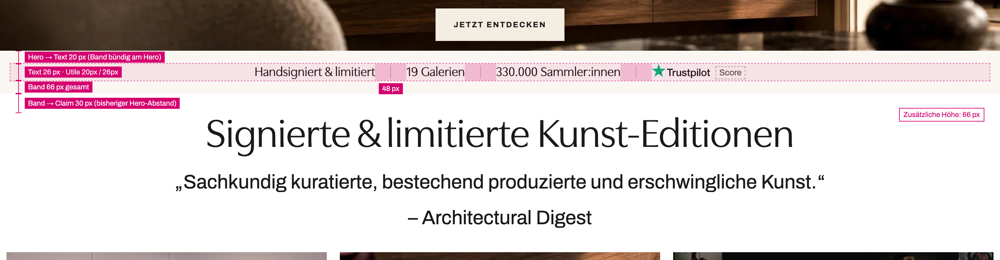
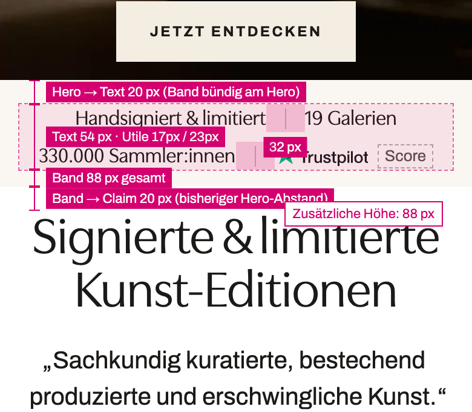

Homepage trust strip
One line of facts directly below the hero, above the claim block. Nothing else on the homepage changes. Shown on the real page: the 9 October capture of lumas.de, structure re-checked against live on 14 October.
The variant in context



The strip, close up



Why it looks like this
A plinth under the hero
The hero is treated like a work on the wall and the strip like its plinth: an ivory band set flush against the image's bottom edge, full width, no border, no shadow. It belongs to the hero rather than floating as a separate module, so it confirms what the hero offers instead of competing with it. The ivory echoes the hero's own button, which stays the strongest element in view.
Facts in the brand's own voice
The facts are set in Utile Display, the face of the claim below, so the band reads as LUMAS speaking rather than as a shop notice. Each fact is a number or a plain property, in Kompass register: short, concrete, no adjectives. Hairline dividers keep the four facts distinct without decoration, and Trustpilot appears as its own wordmark, recognisable from the green star and never louder than the line.
Discovery stays first
56% of phone visits to the homepage never scroll past the first tenth of the page, so every pixel above the first artworks costs something. The band uses the hero's existing gap and returns it below, so the page grows by the band alone: 66 px on desktop, 88 px on phones. It offers nothing to click except the Trustpilot proof link.
What I left out
A five-star row (stars need a real score to fill), review counts, icons per fact, uppercase labels, borders and any motion. Each would turn the plinth into a promotional module and pull attention from the hero.
Implementation notes


| Property | Phone (< 760 px) | Tablet and desktop (≥ 760 px) |
|---|---|---|
| Typography | Utile Display (--font-display) 17/23 px, 400, mixed case; 16 px below 375 px, 15 px below 340 px | Utile Display 20/26 px (site rem steps: 22 px at 1920) |
| Band | Full width, --primitive-ivory-100 #faf6f1, one step lighter than the sticky USP bar so the two never merge. No border, no shadow. Text --color-text-primary (contrast 16:1) | |
| Padding | 14 px top and bottom, 4 px between the lines | --sp-5 20 px top and bottom |
| Alignment | Centred, two lines of two facts, break forced after fact 2 (the site's mobile hero runs to 979 px) | Centred, one line, from 980 px |
| Position | Flush with the hero image: the band pulls up by the hero's own bottom gap (2rem below 980 px, 3rem above) and returns the same gap below, so the claim keeps its distance from the hero block | |
| Dividers | 1 px hairlines, --primitive-bone-400, 1em tall, centred in a 32 px (phone) / 48 px (desktop) gap. Drawn in the gap, never in the text, so none can end a line; the one before a wrapped fact is hidden. Facts never break inside | |
| Trustpilot | Official wordmark from the shop sprite (#trustpilot-logo), cap height matched to the text. Score bound to TrustpilotRatingReader, never typed. Links to the profile in a new tab with a 44 px tap area | |
| Behaviour | Not sticky, no animation, no horizontal scroll at any width from 320 to 1920 px | |
- Server-side test. New
ab_homepage_trust_strip_v1in the shop's AbTest module (on/off, stores and split in PIM). Assignment already reaches GA4 and ABlyft. No client-side injection, so no flicker and no layout shift at the fold. - Placement. Hero and claim live in one CMS block, and CMS content renders Twig. A
{{ homepageTrustStrip() }}call between them renders the partial for arm B and nothing for A. - Copy. Glossary keys per locale, editable in PIM. The old hard-coded string "Trustpilot: 4,8 Sterne" (
pdp.trust-elements.reviews) must not be used. - Caching. Confirm Speed Kit varies the homepage by the test cookie, as for the existing room-view test.
- Measure. Primary
global_revenue_order-placed_capped-3447, secondaryvisits pdp, guardrailshomepage_click_hero-cta,homepage_scroll_50pct,global_custom_purchase, newhomepage_click_trust-strip. Analyse homepage visitors only. - Power. At German homepage volumes an RPV difference has to be very large to show up within weeks. Read homepage → product page as the early signal and RPV as the no-harm check, and run DE, AT and CH together.
Decide before launch
The collector count disagrees across sources. The brief and the site's sticky bar say 330.000; the brandbook's key figures say 350K+; the warehouse holds 362,434 customer records with an order, trade accounts included. Pick one source, and update the sticky bar in the same release so two numbers never show at once.
"Handsigniert & limitiert" repeats the headline right below it ("Signierte & limitierte Kunst-Editionen"). The brandbook asks to sharpen the core message, not repeat it. Suggested swap: "Handgefertigt in Deutschland", which the brandbook names as the DACH trust signal, once production confirms it holds for every edition sold on .de. The current claim also has catalogue exceptions (Masters carry estate stamps).
The sticky USP bar repeats two facts on desktops from 1260 px until a visitor closes it, and it says "Kunden", a blacklisted word. On a 1536 × 864 laptop it now meets the ivory band at the fold. It stays in both arms to keep this a one-variable test (phones and tablets never show it); if the strip wins, retire the sticky bar on the homepage.
The green Trustpilot star extends the palette. It needs Creative Director sign-off; the PDP rating row is the precedent.
The LiveChat greeting card covers the bottom of a phone's first screen, the strip included, until it is dismissed. It does so in both arms, but it dilutes the strip's exposure.